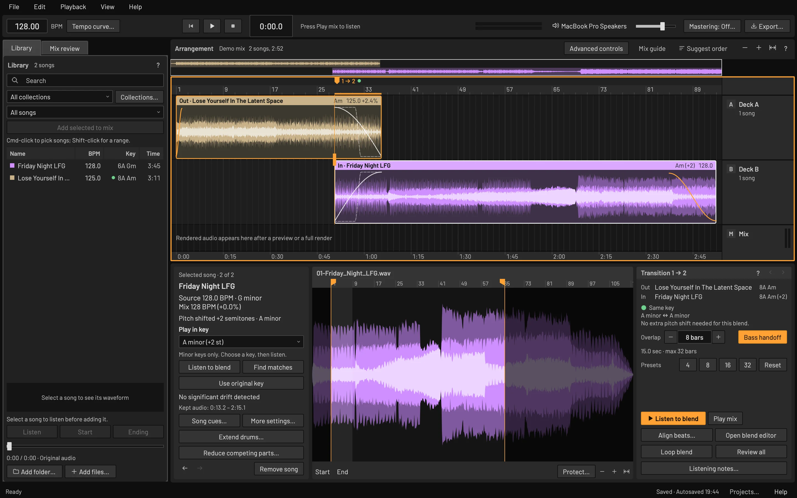
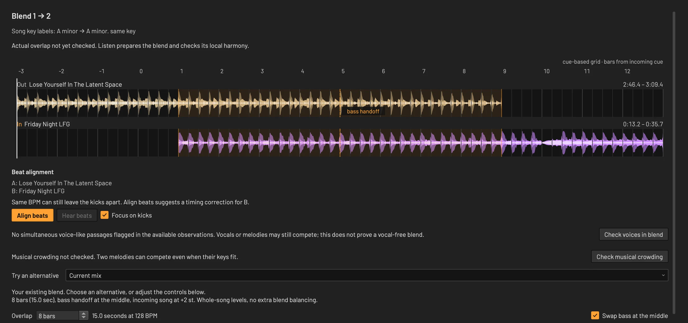
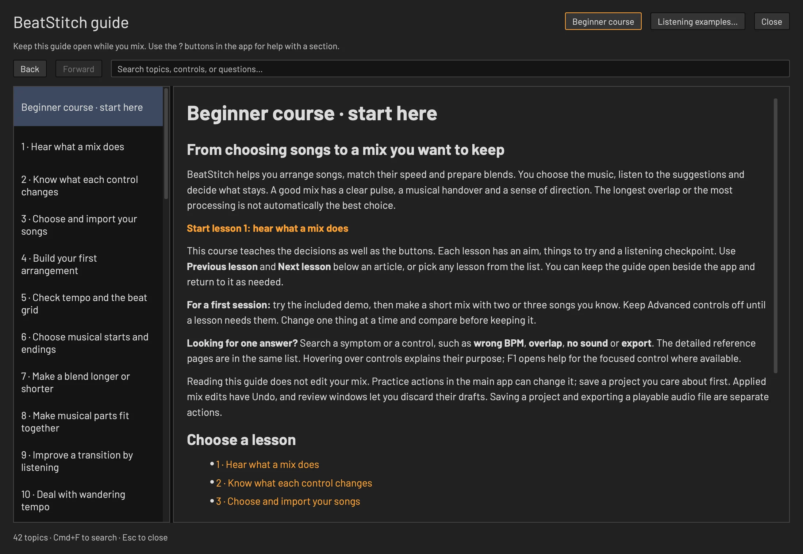

Stitch your songs into one continuous mix.
BeatStitch matches tempo without changing key, lines up the beats and hands the bass from one song to the next. You hear every change before you keep it. Free for Mac, Windows and Linux, and it all runs on your computer.
macOS 14 or newer on Apple Silicon, Windows and Linux on x64. Mixing works right away; the analysis models are optional downloads.
Press the record
Two songs by Marco van Hylckama Vlieg, an excerpt of a saved project rendered by the BeatStitch engine. Friday Night LFG plays two semitones higher so both songs are in A minor. Without uses the same songs and overlap at their original tempos and keys, with the blend's first downbeat lined up by hand and a plain crossfade. Both versions play at matched loudness. Press 1 or 2 to switch while the music plays.
What happens inside a blend
A blend is the stretch where two songs play at once. Three things decide whether it sounds like one mix or two records fighting: speed, key and bass.
Speed changes, pitch stays
Rubber Band R3 time-stretches every song to the mix tempo and keeps its key. In the demo, Lose Yourself In The Latent Space speeds up 2.4%, from 125 to 128 BPM, and stays in A minor.
Beat grids then put the kicks in the same place. Skip the tempo match and two songs only 3 BPM apart drift three quarters of a beat apart within eight bars.
| Song | Source | In the mix | Change |
|---|
Keys that agree
BeatStitch detects each song's key on your computer and shows it in Camelot notation, the wheel DJs use to find songs that blend. The same key or a neighbor usually works.
When a blend clashes, BeatStitch can suggest a pitch change of up to two semitones. Nothing changes until you listen and choose it. In the demo, Friday Night LFG (G minor, 6A) plays two semitones higher, in A minor (8A), the key of Lose Yourself In The Latent Space.
One bass line at a time
Two bass lines at once turn the low end to mud. During each blend, BeatStitch splits both songs at 180 Hz. Everything above crossfades over the whole overlap, and the bass changes hands in a single bar at the midpoint.
Choose 4, 8, 16 or 32 bars per blend, or switch the handoff off when a plain crossfade suits the music better.
Train your ears
BeatStitch includes three short listening examples, and here they are. Play one, then switch between A and B while the music keeps going. Headphones help with the bass.
Your whole mix on one screen
Songs, arrangement and the selected blend stay in view together. This is the same demo mix, opened in the app.

Library
Add a folder and BPM and key analysis runs in the background. Sort by tempo, Camelot key or length.
Arrangement
Real waveforms with fade curves for every blend. Suggest order proposes a running order from key, tempo and energy.
Transition
Overlap length, bass handoff and presets for the selected blend. Listen to blend plays just that passage.
Open any blend and fine-tune it
The blend editor zooms in on one transition, with both songs on a shared bar grid and the bass handoff marked where it happens.

Align beats
Same BPM can still leave the kicks apart. Align beats suggests a timing correction for the incoming song.
Check voices
Flags passages where two vocals may overlap, then offers nearby entrances with less collision.
Check crowding
Looks for two melodies competing in the overlap and can offer a shorter overlap to compare.
Compare, then apply
Hear either song or the blend, and switch between your mix and a draft on one clock. Applying is one Undo step.
Analysis that stays on your computer
Choose the models you want in File → Downloads & features. Beat, key and voice detection take about 125 MB. Once installed they run offline, songs are never uploaded and there's no account. Every result is a suggestion you can listen to and override.
- Tempo and beats
- Beat This! finds beats and downbeats. Every BPM stays editable.
- Key
- OpenKeyScan detects each song's key and BeatStitch shows it in Camelot notation.
- Tempo drift
- Analyze checks whether a song's tempo wanders. Stabilize can straighten confidently detected passages, and you compare before you keep it.
- Possible vocals
- PANNs marks voice-like passages so you can protect them or keep two vocals apart. Treat the marks as prompts to listen.
- Builds and drops
- Experimental section analysis with EDMFormer and MuQ suggests intros, builds, drops and breakdowns. Optional 3.07 GB download.
- Vocal and drum reduction
- Spleeter can turn down one song's vocals or drums during a blend, so two parts stop competing. Separate 146 MB download.
- Extend drums
- Repeat a clean 1, 2, 4 or 8-bar drum passage to lengthen an intro or outro, then compare it with the original.
- Mastering
- An optional final pass: gentle compression, peak control and a restrained loudness increase. Compare at matched volume before you apply it.
Learn while you mix
A 14-lesson beginner course is built into the app. Each lesson has an aim, steps to try and a listening checkpoint, and reading it never changes your mix.
Press F1 on any control for its help topic. The guide has 41 searchable topics and can stay open beside your mix.
- Hear what a mix does
- Know what each control changes
- Choose and import your songs
- Build your first arrangement
- Check tempo and the beat grid
- Choose musical starts and endings
- Make a blend longer or shorter
- Make musical parts fit together
- Improve a transition by listening
- Deal with wandering tempo
- Fix the problem you actually hear
- Finish, save and export
- Know when advanced tools help
- Develop your own mixing routine

Built for trying things
Mixing is trial and error. BeatStitch keeps every experiment reversible.
Undo every change
Each applied edit is one Undo step, and review windows let you discard a draft.
Recovery copies
Autosave keeps recovery copies. Opening one never overwrites your project.
Your files stay put
Projects point to your original audio and never modify it. A portable project moves a mix and its songs together.
Export when it's right
Save the finished mix as WAV, FLAC or MP3, with an optional tracklist of song start times.
BeatStitch is free.
Every feature, no account and no trial. The app's code is open source under GPL-3.0-or-later.
The demo, listening examples and every mixing tool work before you download any models. View the source code
Offline after setup
Analysis models install from File → Downloads & features and survive app updates. After that, nothing needs a connection.
Licenses
Libraries, fonts and models keep their own terms. The MuQ weights in the optional build and drop download are CC BY-NC 4.0. Full notices are in the app under About.
Support
Donations are optional and unlock nothing. If you like this tool, consider buying me a coffee.